Développement du plugin WordPress sur-mesure, intégration Stripe par webhooks, authentification
et gestion des abonnements. Chaque trace illustre un savoir-faire élémentaire du référentiel BUT.
Trace n°1
Architecture modulaire du plugin WordPress
Savoir-faire élémentaires de cette trace
Concevoir une architecture logicielle
Refactoriser du code existant
Appliquer des bonnes pratiques de développement
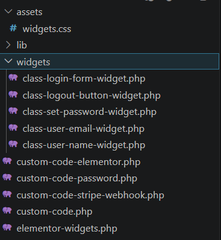
Figure 1a — Avant : code monolithique, god files, sans séparation des responsabilités.
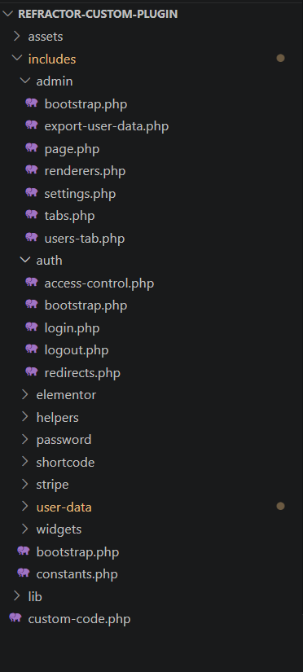
Figure 1b — Après : plusieurs modules distincts, fichier d'entrée central, 1 responsabilité par fichier.
Descriptif de la trace
Le plugin a démarré comme un fichier monolithique unique
concentrant toute la logique : webhooks, authentification, profil utilisateur, administration.
Cette organisation rendait le code illisible et impossible à transmettre. La figure 1a montre
cet état initial. En semaine 8, après la démonstration à Sophie et sa demande explicite de
faciliter la reprise par Clovis, j'ai refactorisé
l'intégralité du plugin en plusieurs modules distincts à responsabilité unique. La figure 1b montre
le résultat : chaque domaine fonctionnel dispose de son propre dossier, le fichier d'entrée
ne fait qu'orchestrer les modules sans contenir de logique métier.
Savoir-faire mobilisés & lien avec la trace
Refactoriser du code existant : la comparaison
figures 1a → 1b illustre directement la transformation :
réduction de la taille des fichiers, suppression des dépendances implicites entre
fonctionnalités, découpage selon le principe de responsabilité unique.
Concevoir une architecture logicielle : la structure
retenue (figure 1b) permet d'ajouter ou modifier un module sans risquer d'affecter les autres.
Le fichier custom-code.php visible en tête d'arborescence
est le seul point d'entrée ; il enregistre chaque module sans couplage fort.
Appliquer des bonnes pratiques : utilisation des
hooks WordPress plutôt que modification du core, nommage cohérent des fonctions,
chaque fichier peut être lu et modifié indépendamment par Clovis sans connaissance
du reste du plugin.
Trace n°2
Intégration Stripe — Webhooks & création de compte
Savoir-faire élémentaires de cette trace
Développer la partie back-end d'une application
Sécuriser une application
Manipuler des bases de données
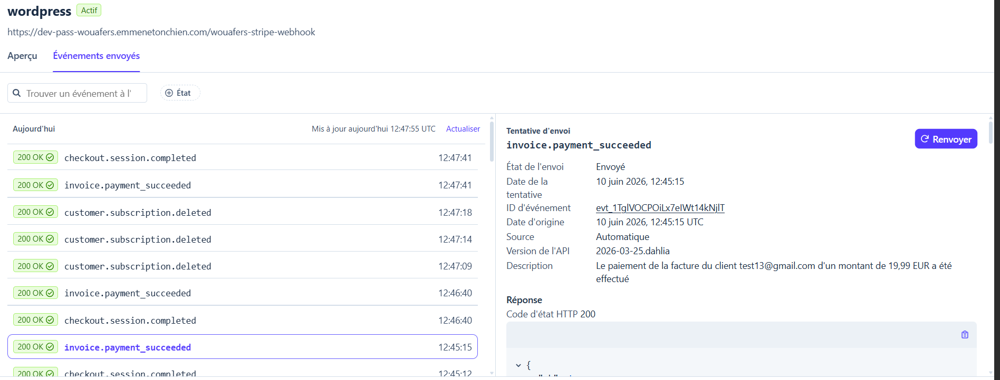
Figure 2a — Réception d'un webhook Stripe et création automatique de l'utilisateur WordPress (semaine 2–3).
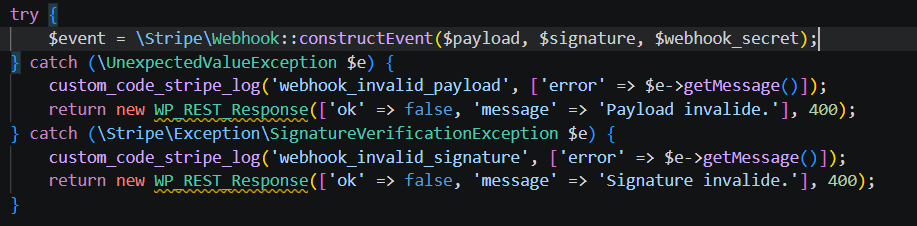
Figure 2b — Vérification de la signature HMAC du webhook et gestion des exceptions : protection contre les requêtes forgées.
Descriptif de la trace
La figure 2a montre les webhooks reçus depuis le dashboard Stripe avec leur statut de livraison.
La figure 2b montre le code côté plugin qui les traite : à chaque requête entrante, la
signature HMAC est vérifiée avant tout traitement —
toute requête sans signature valide est rejetée immédiatement. Ce mécanisme a bloqué
une fausse requête lors des tests en semaine 3. En cas de succès, le handler crée le
compte WordPress, stocke l'ID client Stripe et déclenche l'email de mot de passe.
Savoir-faire mobilisés & lien avec la trace
Sécuriser une application : la figure 2b montre
l'appel à Webhook::constructEvent()
et les deux catch qui stoppent les requêtes invalides, preuve directe
de la protection contre les injections de faux webhooks.
Développer le back-end : la figure 2a confirme que les
événements Stripe (checkout.session.completed) arrivent et sont traités
avec succès. Le handler PHP mappe le payload JSON vers les métadonnées utilisateur WordPress.
Trace n°3
Authentification & contrôle d'accès aux abonnements
Savoir-faire élémentaires de cette trace
Sécuriser une application
Développer la partie back-end
Tester et valider une application
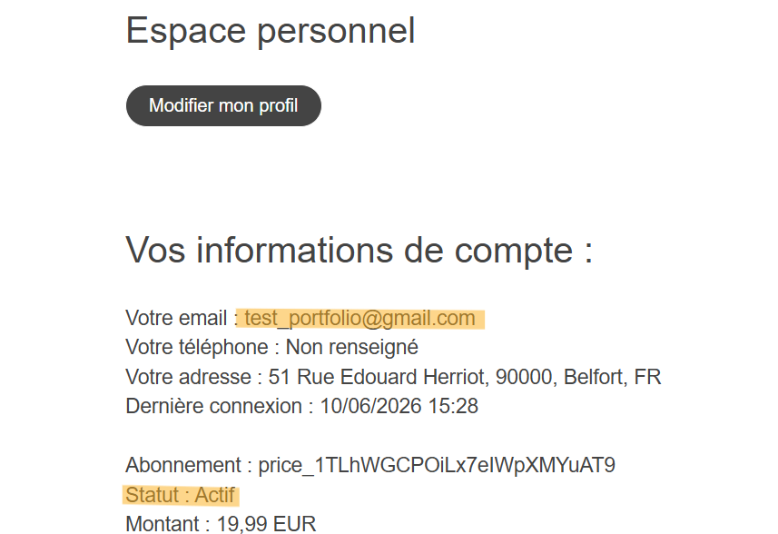
Figure 3a — Espace membre : utilisateur connecté avec abonnement Stripe actif — accès autorisé.
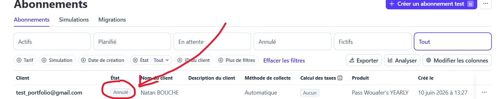
Figure 3b — Dashboard Stripe (test) : suppression de l'abonnement — état qui doit déclencher le blocage côté site.
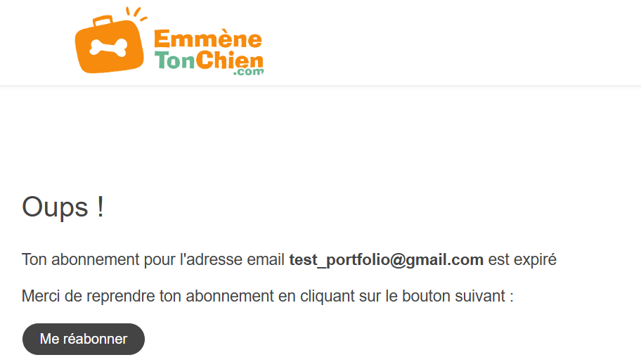
Figure 3c — Blocage côté site : après connexion, l'utilisateur sans abonnement actif est redirigé vers la page de régularisation.
Descriptif de la trace
Ces trois captures documentent le scénario complet de la sécurisation du Pass Wouafer's.
La figure 3a montre l'accès autorisé pour un abonné actif.
Les figures 3b et 3c montrent le cas de test : l'abonnement est supprimé dans Stripe (3b),
puis à la prochaine connexion le plugin interroge l'API Stripe en temps réel, détecte le
statut inactif et refuse l'accès en redirigeant vers
la page de régularisation (3c). Les cas limites (résiliation, paiement échoué, double abonnement)
ont été testés et validés en semaine 6.
Savoir-faire mobilisés & lien avec la trace
Sécuriser une application : la figure 3c montre le
refus d'accès effectif. La comparaison 3a (accès OK) / 3c (accès bloqué) prouve que
seuls les abonnés actifs passent.
Tester et valider : la figure 3b est le setup du test —
suppression volontaire de l'abonnement dans Stripe pour vérifier que le blocage se
déclenche correctement côté site. C'est un test de bout en bout (Stripe → API → plugin → UI).
Trace n°4
Maintenabilité, documentation et widgets Elementor no-code
Savoir-faire élémentaires de cette trace
Documenter un projet logiciel
Développer des composants d'interface réutilisables
Concevoir pour la maintenabilité et la reprise
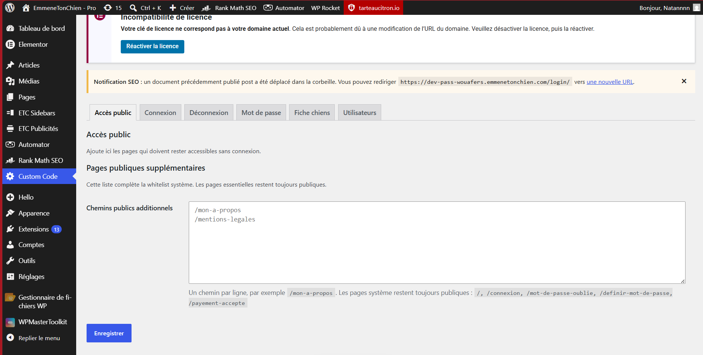
Figure 4a — Interface d'administration du plugin : onglets custom code accessibles depuis WordPress admin, configurables par l'équipe sans développement.
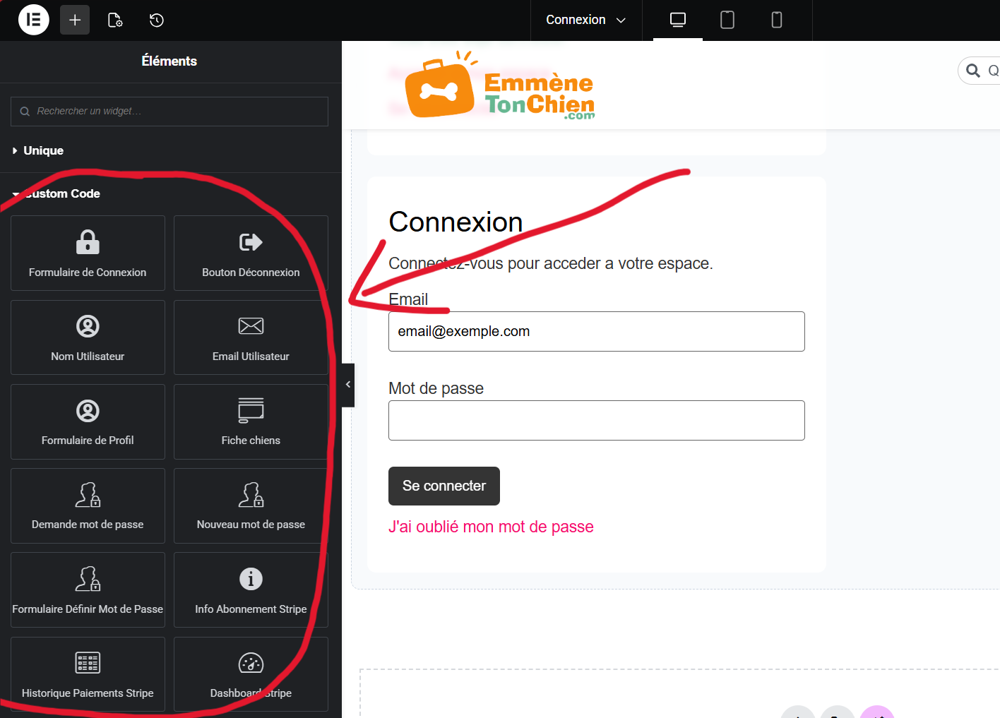
Figure 4b — 13 widgets Elementor sur-mesure dans le panneau : l'équipe peut construire ou modifier l'espace membre par drag & drop.
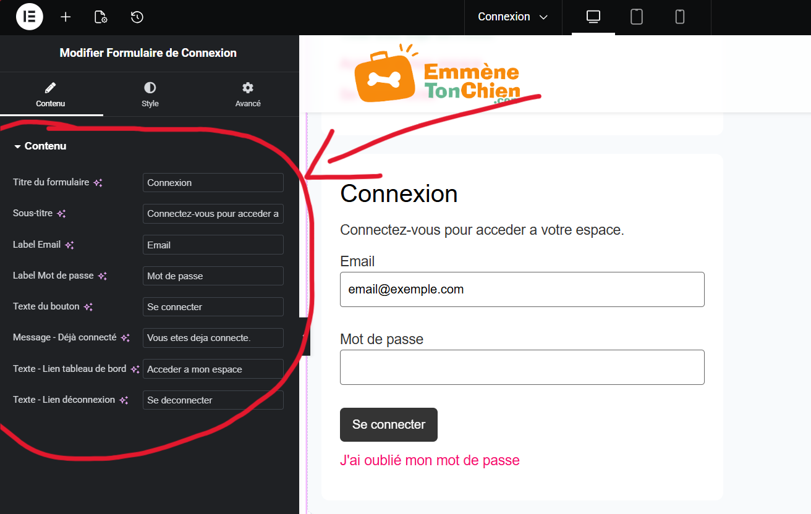
Figure 4c — Options de personnalisation no-code du widget formulaire de connexion : labels, placeholders et messages modifiables depuis l'interface Elementor.
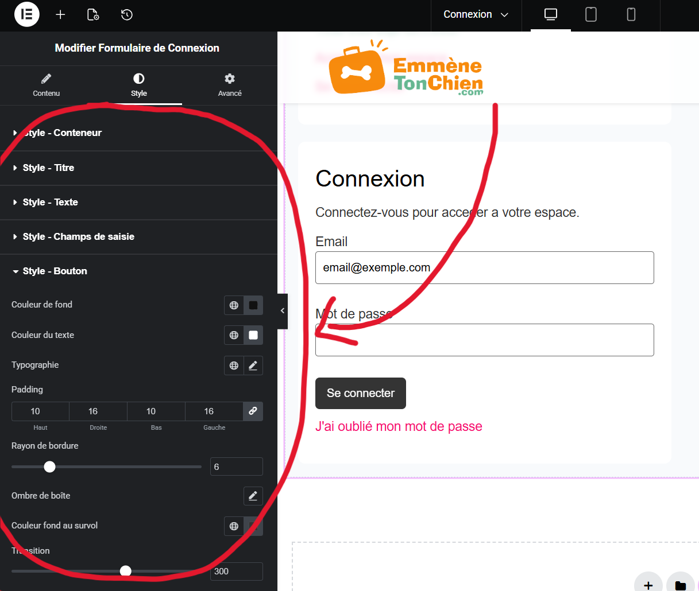
Figure 4d — Personnalisation visuelle no-code du widget : couleurs, marges et typographie configurables directement dans Elementor.
Descriptif de la trace
Deux contraintes structuraient le projet au-delà du fonctionnel :
le plugin devait être repris sans difficulté par Clovis,
le prochain développeur, et l'équipe non-technique devait pouvoir
personnaliser l'espace membre sans toucher au code.
Cette trace documente les livrables construits pour répondre à ces deux exigences :
13 widgets Elementor sur-mesure, une interface d'administration no-code pour la whitelist des pages,
un mode de prévisualisation des shortcodes dans l'éditeur (indépendant de l'état de connexion),
ainsi qu'une documentation technique et un guide utilisateur rédigés en fin de stage.
Savoir-faire mobilisés & lien avec la trace
Développer des composants d'interface réutilisables :
les 13 widgets visibles dans le panneau Elementor
(connexion, profil, abonnement, paiements, réinitialisation de mot de passe...)
permettent à n'importe quel membre de l'équipe de construire ou modifier une page
de l'espace membre par glisser-déposer, sans écrire une ligne de PHP ou de CSS.
Chaque widget expose des options de personnalisation de texte et de style directement
dans l'interface Elementor.
Documenter un projet logiciel :
rédaction d'une documentation technique pour Clovis (architecture des modules,
hooks WordPress utilisés, conventions de nommage, procédure de déploiement)
et d'un guide utilisateur pour l'équipe (liste des shortcodes, paramètres des widgets,
gestion de la whitelist depuis l'admin WordPress).
Concevoir pour la maintenabilité :
le mode de prévisualisation des shortcodes dans Elementor,
actif quel que soit l'état de session ou d'abonnement, évite à Clovis de devoir
se connecter avec un compte test à chaque modification de page. L'interface admin
de la whitelist lui permet d'ajouter ou retirer des pages publiques sans déploiement.
Bilan — Savoir-faire généraux (domaine technique)
Compétence 1 — Réaliser un développement d'application
Contexte d'utilisation des savoir-faire élémentaires
Architecture et back-end mobilisés
sur toutes les traces : plugin modulaire (trace 1), webhooks (trace 2), auth (trace 3).
Bonnes pratiques : validation webhook, refactorisation, hooks WP.
Composants réutilisables et documentation
(trace 4) : 13 widgets Elementor no-code pour l'équipe, interface admin whitelist, documentation
technique pour Clovis et guide utilisateur pour l'équipe non-technique.
Contexte d'apprentissage
PHP/WordPress : bases vues en cours (S2–S3). Stripe et webhooks : appris en stage
avec documentation officielle. Architecture modulaire et widgets Elementor : autonomie
+ retours Sophie (S8). Documentation technique : premier exercice de rédaction pour
une reprise par un tiers (Clovis).
Difficulté
Modérée à élevée pour Stripe (signature, cas limites). Architecture : difficulté
moyenne une fois le besoin de maintenabilité compris. Widgets Elementor : difficulté
modérée (API Elementor spécifique). Documentation : faible techniquement, effort de
formalisation important pour cibler deux publics différents (développeur / équipe).
Avant / après le stage
Avant
Scripts PHP isolés, peu de structuration. Peu d'expérience API tierces en production. Jamais documenté un projet pour une reprise par un tiers.
Après
Plugin modulaire maintenable, paiement récurrent sécurisé, 13 composants Elementor no-code livrés à l'équipe, documentation technique et guide utilisateur rédigés.
Compétence 2 — Optimiser des applications informatiques